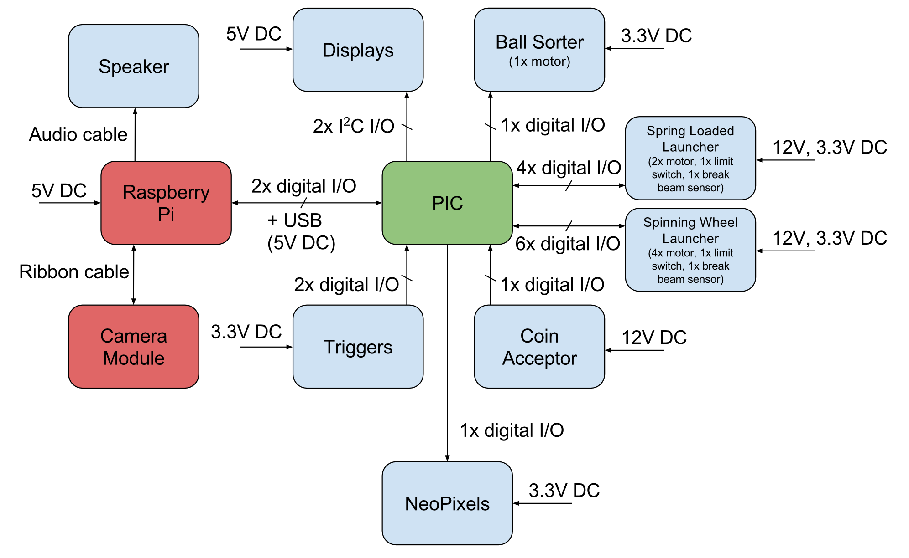
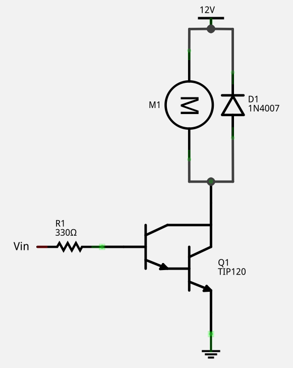
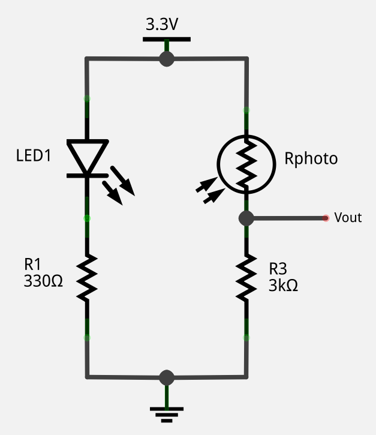

Electrical System
The image above shows a block diagram of the electrical system. Specific electrical details are discussed below.
Motor Drivers
We used a very simple motor driver circuit to control our motors. When the Darlington array is activated by the input pin, it allows current to flow through it and, thus, turns on the motor. This driver can do variable speed via PWM, but can only drive the motor in one direction, which is fine for our use case. The driver shown powers the motor with 12V, which is used for six of our motors, but the sorter motor is powered with 3.3V because it needs to go much slower. The Darlington array used is a TIP120, which can source a hearty 5A of current. The flyback diode, a 1N4007, offers protection from the voltage spike that can occur when the motor is stopped.
Break Beam Sensors
We also used a simple visible light break beam sensor to detect when balls are loaded into the launchers. When the photoresistor is illuminated, the output voltage is around 2V, a logical high. When it is blocked by a ball, the output voltage is around 0.6V, a logical low.
Power Supply
To power the entire system, we used an 305W ATX computer power supply. The total power draw of our system is around 125W, with the current requirements of each voltage source well below the ratings of the power supply.